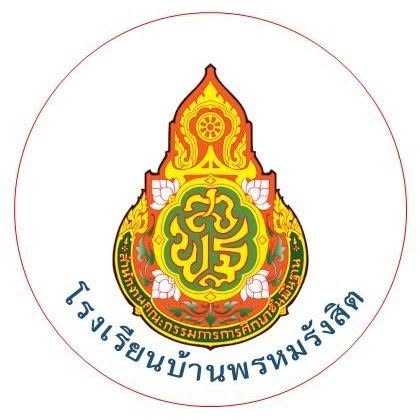
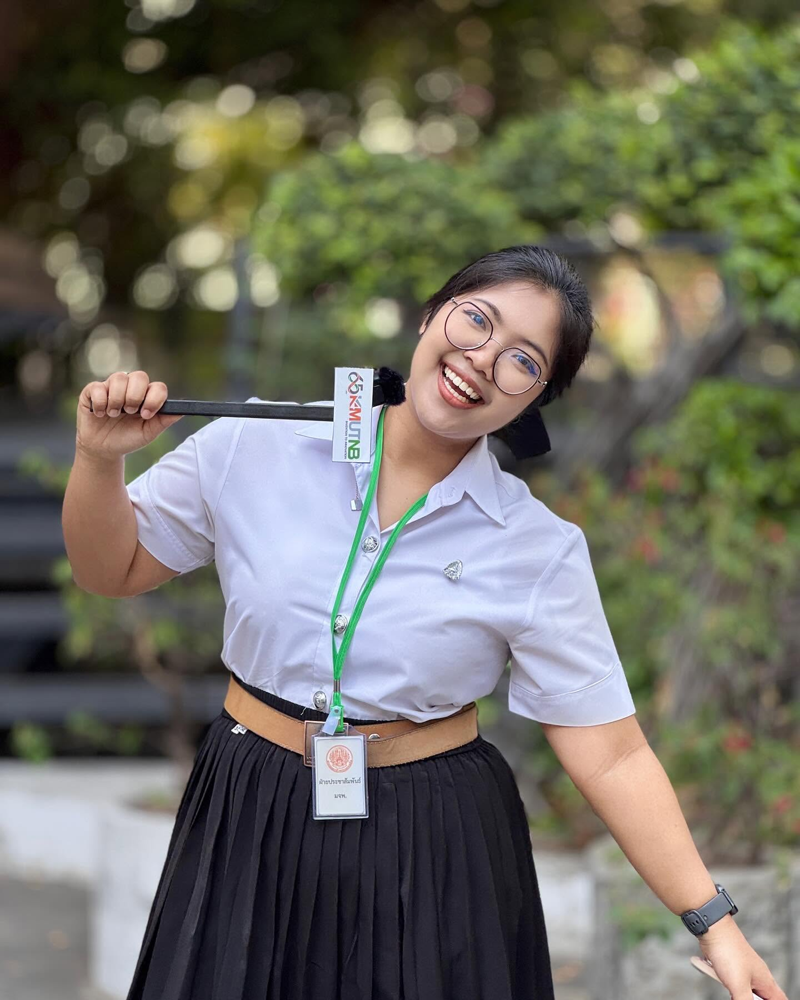

ข้อมูลผู้จัดทำรายงานปฏิบัติการสอน
นางสาวเขมมิกา สุทธิชาติ
ข้อมูลส่วนตัว (Personal Info)
นางสาวเขมมิกา สุทธิชาติ
ประวัติการศึกษา (Education Roadmap)
เส้นทางการศึกษาตั้งแต่งานประถมศึกษาจนถึงระดับปริญญาตรี

โรงเรียนบ้านพรหมรังสิต
การศึกษาขั้นพื้นฐานระดับประถมศึกษา
โรงเรียนมัธยมพัชรกิจกิติยาภา ๓ สุราษฎร์ธานี
การศึกษาระดับมัธยมศึกษาตอนต้น (ม.1 - ม.3)
วิทยาลัยอาชีวศึกษาสุราษฎร์ธานี
การศึกษาวิชาชีพอาชีวศึกษา รางวัลพระราชทาน

มหาวิทยาลัยเทคโนโลยีพระจอมเกล้าพระนครเหนือ (มจพ.)
ภาควิชาคอมพิวเตอร์ศึกษา คณะครุศาสตร์อุตสาหกรรม
ความเชี่ยวชาญและความถนัด
ทักษะความเชี่ยวชาญด้านการศึกษาวิชาชีพครูและการผลิตสื่อดิจิทัล

การสร้างสรรค์สื่อดิจิทัลและเทคโนโลยีการเรียนรู้
มุ่งเน้นการประยุกต์ใช้เทคโนโลยีคอมพิวเตอร์สมัยใหม่ การสร้างสรรค์สื่อการเรียนรู้ที่มีประสิทธิภาพ และการออกแบบงานกราฟิกอย่างมืออาชีพ เพื่อพัฒนาผู้เรียนและขับเคลื่อนนวัตกรรมการศึกษา
เทคโนโลยีเพื่อการศึกษา
มีความถนัดในการใช้เทคโนโลยีเพื่อการศึกษา การประยุกต์ใช้เครื่องมือดิจิทัลและซอฟต์แวร์ในการจัดการเรียนรู้ยุคใหม่
การผลิตสื่อการเรียนรู้
ออกแบบและพัฒนานวัตกรรมสื่อการเรียนรู้ สื่อมัลติมีเดีย สื่อการสอนปฏิสัมพันธ์ และสื่อโมชั่นกราฟิกเพื่อเพิ่มประสิทธิภาพผู้เรียน
สร้างสรรค์งานกราฟิกและดีไซน์
การออกแบบกราฟิกอัตลักษณ์ การเลือกใช้โทนสีและองค์ประกอบศิลป์ (Visual Graphic & UI Design) เพื่อการสื่อสารอย่างมีสไตล์